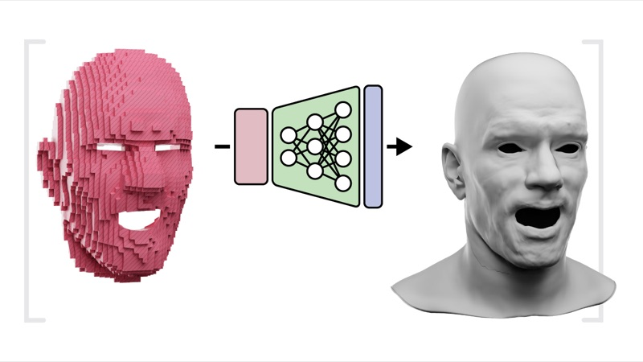
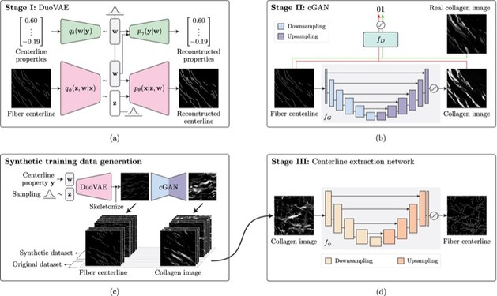
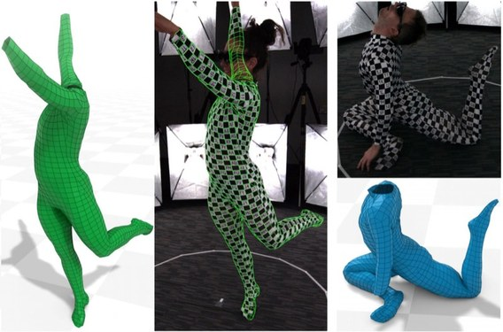

|
 |
Near-realtime Facial Animation by Deep 3D Simulation Super-resolution
, Sangeetha Grama Srinivasan, Matthew Cong, Doyub Kim, Byungsoo Kim, Jonathan Swartz, Ken Museth, and Eftychios Sifakis ACM Transactions on Graphics (TOG) 2024 paper | github | SIGGRAPH ASIA 2024 |
|
 |
Collagen Fiber Centerline Tracking in Fibrotic Tissue via Deep Neural Networks with Variational Autoencoder-based Synthetic Training Data Generation
*, Bin Li*, Yuming Liu, Michael S. Nelson, Helen M. Wilson, Eftychios Sifakis, and Kevin W. Eliceiri. (* equal contributions) Medical Image Analysis 2023 paper | github |
|
 |
Capturing Detailed Deformations of Moving Human Bodies
He Chen, , Kutay Macit, and Ladislav Kavan ACM SIGGRAPH 2021 paper | project page | multi-camera calibration codes |

|
Adaptive Precision-Enhancing Hand Rendering for Wearable Fingertip Tracking Devices
and Jung-Min Park IEEE/RSJ International Conference on Intelligent Robots and Systems (IROS) 2020 paper | short video |

|
Stretchable Skin-Like Cooling/Heating Device for Reconstruction of Artificial Thermal Sensation in Virtual Reality
Jnwoo Lee, Heayoun Sul, Wonha Lee, Kyung Rok Pyun, Inho Ha, Dongkwan Kim, , Hyeonjin Eom, Yeosang Yoon, Jinwook Jung, Dongjun Lee, and Seung Hwan Ko Advanced Functional Materials 2020 paper |

|
Dental Simulator with Increased Z-width of Haptic Rendering
, Myungsin Kim, and Dongjun Lee AsiaHaptics 2018 paper | short video | long video* *Outstanding MS Thesis Presentation Award (Seoul National University 2019) |

|
Rigid-body Collaborative Manipulation among Remote Users with Wearable Cutaneous Haptic Interfaces
Myungsin Kim, WonHa Lee, , Junghan Kwon, Yong-Lae Park, and Dongjun Lee AsiaHaptics 2018 paper | video |
|
|
Design and Performance Evaluation of Wearable Haptic Interfaces
WonHa Lee, Myungsin Kim, , and Dongjun Lee International Conference on Control, Automation and Systems 2018 |
|
|
Wearable Cutaneous Haptic Interface with Soft Sensors and IMUs
Yongjun Lee, Myungsin Kim, Yongseok Lee, , and Dongjun Lee Korea Robotics Society Annual Conference 2018 |